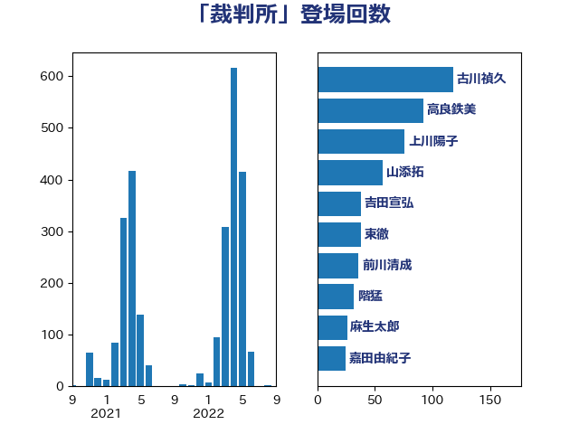

単語「裁判所」

| 古川禎久 | 自由民主党 | 118 回 |
| 高良鉄美 | 無所属 | 92 回 |
| 上川陽子 | 自由民主党 | 76 回 |
| 山添拓 | 日本共産党 | 57 回 |
| 吉田宣弘 | 公明党 | 38 回 |
| 東徹 | 日本維新の会 | 38 回 |
| 前川清成 | 日本維新の会 | 36 回 |
| 階猛 | 立憲民主党 | 32 回 |
| 麻生太郎 | 自由民主党 | 26 回 |
| 嘉田由紀子 | 無所属 | 25 回 |
| 守島正 | 日本維新の会 | 25 回 |
| 後藤茂之 | 自由民主党 | 23 回 |
| 大口善徳 | 公明党 | 22 回 |
| 安江伸夫 | 公明党 | 22 回 |
| 鈴木馨祐 | 自由民主党 | 22 回 |
| 鈴木義弘 | 国民民主党 | 20 回 |
| 伊藤孝江 | 公明党 | 19 回 |
| 義家弘介 | 自由民主党 | 19 回 |
| 川合孝典 | 国民民主党 | 18 回 |
| 田村貴昭 | 日本共産党 | 18 回 |
| 本村伸子 | 日本共産党 | 17 回 |
| 林芳正 | 自由民主党 | 16 回 |
| 矢倉克夫 | 公明党 | 16 回 |
| 串田誠一 | 日本維新の会 | 14 回 |
| 岸田文雄 | 自由民主党 | 13 回 |
| 清水真人 | 自由民主党 | 13 回 |
| 玉木雄一郎 | 国民民主党 | 13 回 |
| 足立康史 | 日本維新の会 | 13 回 |
| 野上浩太郎 | 自由民主党 | 13 回 |
| 吉川沙織 | 立憲民主党 | 12 回 |
| 山本香苗 | 公明党 | 12 回 |
| 松原仁 | 立憲民主党 | 11 回 |
| 津島淳 | 自由民主党 | 11 回 |
| 米山隆一 | 立憲民主党 | 11 回 |
| 柴田巧 | 日本維新の会 | 10 回 |
| 日下正喜 | 公明党 | 9 回 |
| 山口俊一 | 自由民主党 | 8 回 |
| 川田龍平 | 立憲民主党 | 8 回 |
| 打越さく良 | 立憲民主党 | 8 回 |
| 豊田俊郎 | 自由民主党 | 8 回 |
| 鈴木庸介 | 立憲民主党 | 8 回 |
| 勝部賢志 | 立憲民主党 | 7 回 |
| 小野田紀美 | 自由民主党 | 7 回 |
| 清水貴之 | 日本維新の会 | 7 回 |
| 西村康稔 | 自由民主党 | 7 回 |
| 阿部弘樹 | 日本維新の会 | 7 回 |
| 伊佐進一 | 公明党 | 6 回 |
| 大串博志 | 立憲民主党 | 6 回 |
| 小西洋之 | 立憲民主党 | 6 回 |
| 後藤祐一 | 立憲民主党 | 6 回 |
| 田村憲久 | 自由民主党 | 6 回 |
| 田村智子 | 日本共産党 | 6 回 |
| 藤岡隆雄 | 立憲民主党 | 6 回 |
| 鈴木俊一 | 自由民主党 | 6 回 |
| 高木毅 | 自由民主党 | 6 回 |
| 古川俊治 | 自由民主党 | 5 回 |
| 国光あやの | 自由民主党 | 5 回 |
| 山下芳生 | 日本共産党 | 5 回 |
| 新藤義孝 | 自由民主党 | 5 回 |
| 梶山弘志 | 自由民主党 | 5 回 |
| 櫻井周 | 立憲民主党 | 5 回 |
| 武田良太 | 自由民主党 | 5 回 |
| 浜地雅一 | 公明党 | 5 回 |
| 稲富修二 | 立憲民主党 | 5 回 |
| 細田博之 | 自由民主党 | 5 回 |
| 若宮健嗣 | 自由民主党 | 5 回 |
| 馬場伸幸 | 日本維新の会 | 5 回 |
| 五十嵐清 | 自由民主党 | 4 回 |
| 井出庸生 | 自由民主党 | 4 回 |
| 奥野総一郎 | 立憲民主党 | 4 回 |
| 宮本徹 | 日本共産党 | 4 回 |
| 山下雄平 | 自由民主党 | 4 回 |
| 松沢成文 | 日本維新の会 | 4 回 |
| 福島みずほ | 社会民主党 | 4 回 |
| 福重隆浩 | 公明党 | 4 回 |
| 藤原崇 | 自由民主党 | 4 回 |
| 井上哲士 | 日本共産党 | 3 回 |
| 井林辰憲 | 自由民主党 | 3 回 |
| 伊藤岳 | 日本共産党 | 3 回 |
| 加田裕之 | 自由民主党 | 3 回 |
| 北神圭朗 | 無所属 | 3 回 |
| 吉田統彦 | 立憲民主党 | 3 回 |
| 坂本哲志 | 自由民主党 | 3 回 |
| 宮本岳志 | 日本共産党 | 3 回 |
| 寺田学 | 立憲民主党 | 3 回 |
| 山東昭子 | 自由民主党 | 3 回 |
| 山田勝彦 | 立憲民主党 | 3 回 |
| 松野博一 | 自由民主党 | 3 回 |
| 泉田裕彦 | 自由民主党 | 3 回 |
| 浅田均 | 日本維新の会 | 3 回 |
| 渡辺猛之 | 自由民主党 | 3 回 |
| 田中健 | 国民民主党 | 3 回 |
| 田所嘉徳 | 自由民主党 | 3 回 |
| 田村まみ | 国民民主党 | 3 回 |
| 稲田朋美 | 自由民主党 | 3 回 |
| 笠浩史 | 無所属 | 3 回 |
| 舞立昇治 | 自由民主党 | 3 回 |
| 鎌田さゆり | 立憲民主党 | 3 回 |
| 高橋克法 | 自由民主党 | 3 回 |
| 下野六太 | 公明党 | 2 回 |
| 伊藤孝恵 | 国民民主党 | 2 回 |
| 倉林明子 | 日本共産党 | 2 回 |
| 加藤勝信 | 自由民主党 | 2 回 |
| 宮崎政久 | 自由民主党 | 2 回 |
| 小倉將信 | 自由民主党 | 2 回 |
| 山口壯 | 自由民主党 | 2 回 |
| 山田賢司 | 自由民主党 | 2 回 |
| 島尻安伊子 | 自由民主党 | 2 回 |
| 末松義規 | 立憲民主党 | 2 回 |
| 松村祥史 | 自由民主党 | 2 回 |
| 柚木道義 | 立憲民主党 | 2 回 |
| 浜田聡 | NHK党 | 2 回 |
| 渡辺周 | 立憲民主党 | 2 回 |
| 石橋林太郎 | 自由民主党 | 2 回 |
| 石橋通宏 | 立憲民主党 | 2 回 |
| 石田昌宏 | 自由民主党 | 2 回 |
| 神谷裕 | 立憲民主党 | 2 回 |
| 茂木敏充 | 自由民主党 | 2 回 |
| 菅義偉 | 自由民主党 | 2 回 |
| 萩生田光一 | 自由民主党 | 2 回 |
| 谷田川元 | 立憲民主党 | 2 回 |
| 赤嶺政賢 | 日本共産党 | 2 回 |
| 野村哲郎 | 自由民主党 | 2 回 |
| 金子恭之 | 自由民主党 | 2 回 |
| 鈴木貴子 | 自由民主党 | 2 回 |
| 三宅伸吾 | 自由民主党 | 1 回 |
| 三木圭恵 | 日本維新の会 | 1 回 |
| 上杉謙太郎 | 自由民主党 | 1 回 |
| 中山展宏 | 自由民主党 | 1 回 |
| 中西祐介 | 自由民主党 | 1 回 |
| 中谷一馬 | 立憲民主党 | 1 回 |
| 中谷真一 | 自由民主党 | 1 回 |
| 井上信治 | 自由民主党 | 1 回 |
| 井坂信彦 | 立憲民主党 | 1 回 |
| 井野俊郎 | 自由民主党 | 1 回 |
| 伊波洋一 | 無所属 | 1 回 |
| 佐藤英道 | 公明党 | 1 回 |
| 北側一雄 | 公明党 | 1 回 |
| 吉川赳 | 無所属 | 1 回 |
| 吉良よし子 | 日本共産党 | 1 回 |
| 国定勇人 | 自由民主党 | 1 回 |
| 國場幸之助 | 自由民主党 | 1 回 |
| 國重徹 | 公明党 | 1 回 |
| 大塚耕平 | 国民民主党 | 1 回 |
| 大西健介 | 立憲民主党 | 1 回 |
| 奥下剛光 | 日本維新の会 | 1 回 |
| 小林鷹之 | 自由民主党 | 1 回 |
| 小野泰輔 | 日本維新の会 | 1 回 |
| 尾崎正直 | 自由民主党 | 1 回 |
| 山下貴司 | 自由民主党 | 1 回 |
| 岡田克也 | 立憲民主党 | 1 回 |
| 平井卓也 | 自由民主党 | 1 回 |
| 庄子賢一 | 公明党 | 1 回 |
| 徳永エリ | 立憲民主党 | 1 回 |
| 杉田水脈 | 自由民主党 | 1 回 |
| 松島みどり | 自由民主党 | 1 回 |
| 松川るい | 自由民主党 | 1 回 |
| 根本匠 | 自由民主党 | 1 回 |
| 梅村みずほ | 日本維新の会 | 1 回 |
| 森屋隆 | 立憲民主党 | 1 回 |
| 橋本岳 | 自由民主党 | 1 回 |
| 江島潔 | 自由民主党 | 1 回 |
| 池下卓 | 日本維新の会 | 1 回 |
| 池田佳隆 | 自由民主党 | 1 回 |
| 河野義博 | 公明党 | 1 回 |
| 浦野靖人 | 日本維新の会 | 1 回 |
| 海江田万里 | 立憲民主党 | 1 回 |
| 熊谷裕人 | 立憲民主党 | 1 回 |
| 玄葉光一郎 | 立憲民主党 | 1 回 |
| 田島麻衣子 | 立憲民主党 | 1 回 |
| 盛山正仁 | 自由民主党 | 1 回 |
| 磯崎仁彦 | 自由民主党 | 1 回 |
| 礒崎哲史 | 国民民主党 | 1 回 |
| 穀田恵二 | 日本共産党 | 1 回 |
| 細野豪志 | 自由民主党 | 1 回 |
| 羽田次郎 | 立憲民主党 | 1 回 |
| 自見はなこ | 自由民主党 | 1 回 |
| 若松謙維 | 公明党 | 1 回 |
| 赤池誠章 | 自由民主党 | 1 回 |
| 金田勝年 | 自由民主党 | 1 回 |
| 鈴木隼人 | 自由民主党 | 1 回 |
| 青柳仁士 | 日本維新の会 | 1 回 |
| 音喜多駿 | 日本維新の会 | 1 回 |
| 高木かおり | 日本維新の会 | 1 回 |
| 高橋千鶴子 | 日本共産党 | 1 回 |
| 高橋英明 | 日本維新の会 | 1 回 |